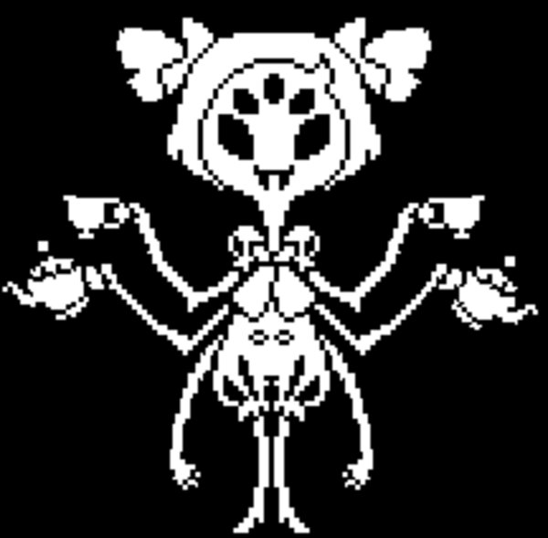

Sobre o jogo
Undertale é um RPG eletrônico criado pelo desenvolvedor norte-americano Toby Fox. No jogo, o jogador controla uma criança humana que caiu no "Subterrâneo", uma região grande e isolada sob a superfície da Terra, separada por uma barreira mágica. Vários monstros são encontrados durante sua missão para retornar à superfície, principalmente através do sistema de combate, pode optar por pacificar ou subjugar os monstros para poupá-los em vez de assassiná-los. Essas escolhas causam mudanças no diálogo, nos personagens e na história com base nos resultados.
O jogo foi lançado em 15 de setembro de 2015 para o Microsoft Windows e OS X,O produto recebeu várias críticas positivas, como em Game Rankings, onde recebeu uma pontuação total de 94,11% baseado em 28 avaliações.Destructoid disse que ele tinha uma excelente jogabilidade, personagens, escrita e trilha sonora, e deu ao título uma pontuação de avaliação de 10 de 10.
Jogabilidade
O jogador controla uma criança e completa objetivos para progredir na história. Ele explora um mundo subterrâneo repleto de cidades e cavernas, e é obrigado a resolver vários quebra-cabeças em sua jornada.O mundo subterrâneo é o lar de monstros, muitos dos quais desafiam o humano em combate;o jogador decide se quer matar, fugir ou fazer amizade com eles. Quando o jogador encontra inimigos em eventos do script ou encontro aleatórios, ele entra em um modo de batalha. Durante as batalhas, ele controla um pequeno coração que representa sua alma, e devem evitar os ataques desencadeados pelo monstro adversário.
Enredo
Undertale se passa em Underground (em tradução livre, "Subterrâneo"), uma enorme caverna subterrânea para onde monstros, que uma vez viviam harmoniosamente com os humanos na superfície, foram banidos depois de perder uma guerra com a humanidade. O Underground é selado da superfície por uma barreira mágica assimétrica criada pelos feiticeiros mais poderosos da humanidade, sendo o único ponto de entrada existente em Mount Ebott.Uma criança cai no Subterrâneo e começa a sua aventura para retornar a sua casa. Existem três caminhos divergentes principais no final do jogo, dependendo de como se age durante encontros com monstros: a rota Neutra, a rota Pacifista e a rota Genocídio.
ROTA PACIFISTA
A rota pacifista consiste em completar o jogo sem causar dano ou matar nenhum tipo de NPC. é considerado por muitos o "Final Bom" do jogo

ROTA NEUTRA
A rota neutra é alcançada se o jogador não for totalmente "bom" e nem totalmente "ruim" ja que você inflige dano e pode matar monstros porem não todos.
ROTA GENOCIDA
Consiste em matar todos em seu caminho para fugir,sem dó ou piedade você assasina todos os seres do Subterrâneo
Personagens Principais

Frisk
Frisk é o personagem jogável, cujo nome só foi revelado no final da Rota Pacifista. É um dos Oito Humanos que entraram no subterrâneo através do buraco do Monte Ebott.

Toriel
Toriel é o segundo personagem encontrado em Undertale. Ela salva o protagonista de Flowey, e o orienta através das Ruínas, guiando até sua nova casa.
Sans
A atitude do Sans para o protagonista depende de suas ações, embora ele normalmente conta piadas com ossos e, ocasionalmente, sai com ele, a menos que ele mate Papyrus.

Papyrus
Papyrus (o nome Papyrus é uma referência a fonte de mesmo nome Papyrus, cuja ele usa em letra maiúscula) é o irmão mais novo de Sans, sendo o segundo Monstro Chefe do jogo. Ele deseja capturar um humano para se tornar membro da Guarda Real e ser reconhecido. Seu primeiro encontro é na chegada de Snowdin onde o encontramos junto ao seu irmão Sans.
Undyne
Undyne é um monstro parecido com um peixe que é líder da Guarda Real. Vestida em sua armadura, ela persegue o humano através da Cachoeira, frequentemente interrompida ou inadvertidamente frustrada por Monstrinho.
Asgore
Asgore Dreemurr é o governante do Subsolo e de seus habitantes, monstros. Ele é o ex-marido de Toriel, pai de Asriel Dreemurr, o pai adotivo de Primeira Criança Caída e o segundo chefe final da Rota Neutra. Embora não seja necessariamente mau ou malicioso, ele serve como um dos principais antagonistas, tramando para matar sete humanos e usar as suas almas para quebrar a barreira que mantém os monstros no Subsolo.
Dra.Alphys
Dra. Alphys é um monstro lagarto fêmea que vive no laboratório em Teraquente. Ela é a atual Cientista Real, uma posição que foi concedida pelo Asgore após a aparente morte de seu antecessor, W.D. Gaster. Asgore contratou Alphys porque ela lhe disse que ela tinha criado uma alma, mas na realidade, ela criou um corpo robótico para um fantasma, Mettaton.
Mettaton
Mettaton é um robô (que contém uma ALMA) que foi projectado e construído por Alphys. Este robô foi criado com o propósito de entretenimento, porém acabou se tornando um robô assassino de humanos. Posteriormente Mettaton revela que ele apenas agiu como Alphys lhe pediu. Ele é a única estrela de televisão no Subsolo e por isso é muito famoso.
Flowey
Flowey é o primeiro personagem que o jogador encontra em Undertale. Ele faz uma introdução ás mecânicas de batalha compartilhando "balinhas da amizade" ou "pétalas da amizade", que são na verdade dardos que machucam o protagonista. Ele tenta enganar o protagonista para que ele vire violento enquanto prossegue em sua jornada pelas ruínas.

Muffet
Muffet é a principal mini-chefe que o protagonista encontra em Teraquente. Ela tem uma confeitaria, e fica irritada com os monstros que não compram qualquer coisa a partir dela.
Asriel
Asriel é o filho de Toriel e Asgore,foi morto na superficie junto da primeira criança caída,mais tarde foi ressucitado por Alphys com a injeção de determinação numa flor dourada o trasformando em Flowey a flor.
Principais Acrônimos
| Acrônimos | Significados |
|---|---|
| Love | (Level Of Violence)Nivel ganhado por causar dor(EXP)aumenta stats básicos |
| EXP | (Execution Points)Pontos ganhados por causar dor |
Prêmios
Undertale recebeu vários prêmios e indicações de várias publicações jornalísticas de jogos. Ganhou Jogo do Ano de The Jimquisition e Zero Punctuation